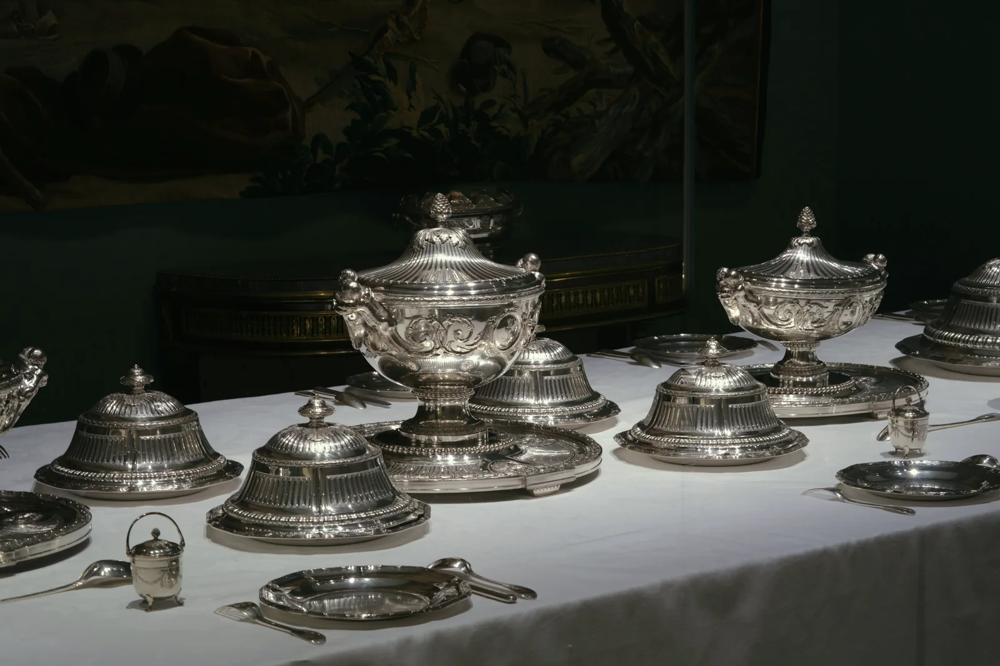

Ezüst felvásárlás
A nagymama evőeszköze, a vitrinben álló tálca, a gyertyatartó, amit senki nem használ: az ezüstöt finomság és súly szerint vesszük meg, darabra vagy egyben.
Becslést kérek Mit jelent a 800 és a 925Négy szám, amit a fémjelen keresünk
A finomság ezrelékben mutatja, mennyi tiszta ezüst van a tárgyban. A régi magyar ezüst általában 800-as, az angol és a modern ékszer 925-ös. Alattuk a tájékoztató grammár (frissítve: 2026. november 10.).
- 800120-440 Ft/grégi magyar és osztrák evőeszköz
- 835130-460 Ft/gdísztárgy, tálca, gyertyatartó
- 900140-490 Ft/grégi ezüstpénz
- 925140-500 Ft/gsterling ezüst, ékszer
Tájékoztató ár, a végleges ajánlat bevizsgálás után.
A napi világpiaci ár és az MNB-árfolyam alapján.
A végleges ajánlat a bevizsgálás után születik. Ha egy tárgy értéke a díszítése vagy a mestere miatt több, darabként ajánlunk rá árat.
Mennyit nyom egy készlet
Egy hagyományos 12 személyes evőeszköz-készlet könnyen 2-3 kilogramm. Az alábbi súlyok tájékoztatók, a pontos értéket a mérlegünk mondja meg.
- Evőkanál, villarégi magyar és osztrák készletből60-90 g
- Kávéskanáldarabonként15-25 g
- Gyertyatartópárban, töltött talppal kevesebb150-400 g
- Cukortartó, tejkiöntőfedővel180-350 g
- Tálcaa mérettől függően400-1500 g
- Ezüstpénzrégi forint, korona, pengő5-30 g
Jellemző súlyok, tárgyanként.
Nehéz a doboz?
Egy teljes étkészletet nem kell becipelnie a belvárosba. Budapesten díjmentesen kimegyünk, és az Ön asztalán mérjük le.
Behozza
Teréz krt. 35., hétfőtől péntekig 10-17, szombaton 10-13. Időpont nem kell.
Térkép és nyitvatartásKimegyünk
Egyeztetett időpontban, az Ön otthonában. A kiszállás és a becslés díjmentes.
Időpontot kérek